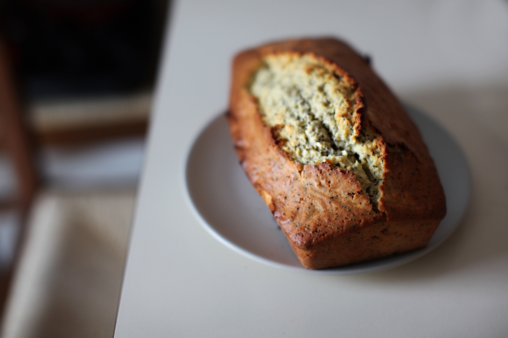

Return to Home Page
Banana Bread

Image source: Airin Party on Pexels
Description
An easy-to-make recipe for a delicious loaf of banana bread, particularly great if you have overripe bananas - these can be used
rather than being thrown away.
Ingredients
- 140g softened butter
- 140g caster sugar
- 2 beaten large eggs
- 140g self-raising flour
- 1 tsp baking powder
- 2 mashed very ripe bananas
Steps
- Heat your oven to 180C/160C fan/gas 4.
- Grease a 2lb loaf baking tin and line it with baking parchment.
- Take the softened butter and caster sugar, creaming them until they're light and fluffy.
- Gradually add the beaten eggs and a little bit of the self-raising flour to the butter and sugar mixture.
- Fold in the flour left back, baking powder and mashed bananas.
-
Pour the mixture into the baking tin, place the tins into the oven and bake for approx. 50 mins or until cooked through.
Check the loaf every 5 mins after approx. 30-40 mins in the oven with a skewer test, where the skewer should go through
the loaf cleanly.
- Cool in the tin for 10 mins. After that, take out the loaf and place on a wire rack.
Recipe source: BBC Good Food